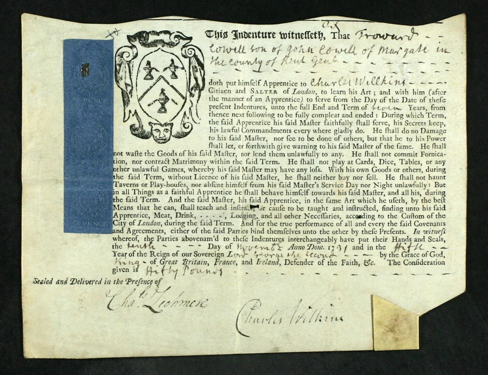
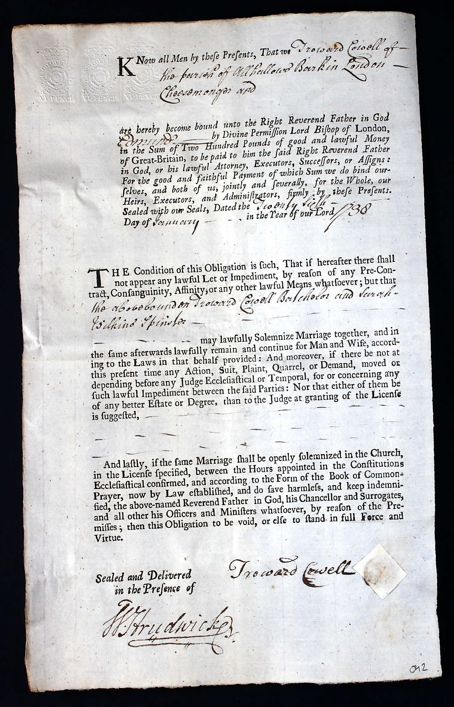
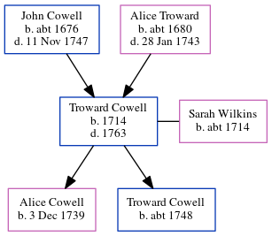

Troward Cowell 1714 - 1763
[ Home ] | [ Calendar ] | [ Surnames Index ] | [ Errors ] | [ Family History ]A cheesemonger and the child of John Cowell (a yeoman) and Alice Troward, Troward Cowell, the six times great-uncle of Nigel Horne, was born in Margate, Kent, England in 17141, was baptised there on 27 Jan 1715 and married Sarah Wilkins (with whom he had 2 children: Alice Troward and Troward) at St Peter-upon-Cornhill Church, Cornhill, London, England on 26 Jan 17381 (Civil marriage in All Hallows, Barking, then parish marriage the next day at St Peter upon Cornhill). In 1755, he was living at Tower Street, London, England.
He died in 1763 in London and was buried at All Hallows, Barking, London on 24 Sept 17632.
Parents
- John was born c. 1676
- Alice was born c. 1680
Children
- Alice Troward was born on 3 Dec 1739
- Troward was born c. 1748
Citations
- London and Surrey, England, Marriage Bonds and Allegations, 1597-1921 Online publication - Provo, UT, USA: Ancestry.com Operations, Inc., 2011.Original data - Marriage Bonds and Allegations. London, England: London Metropolitan Archives. Surrey Marriage Bonds and Allegations records held by the London Metropolitan Archives,
- Greater London Burial Index - Findmypast
Notes
Made bankrupt 25 Nov 1755.
Media
Troward Cowell - Freedom of the City

Troward Cowell - Sarah Wilkins - marriage bond

Greater London Burial Index Transcription - GBOR-LONDONBURIAL-618504
England Births & Baptisms 1538-1975 - R_883175908
Kent Baptisms - GBPRS/CANT/B/96203607
Kent Baptisms - GBPRS/CANT/B/96739428
Family Tree
Map
Generated by ged2site. Last updated on Jul 3, 2024
Known Issues
Death date (1763) has no citations
Residence record for 1755 contains no citation